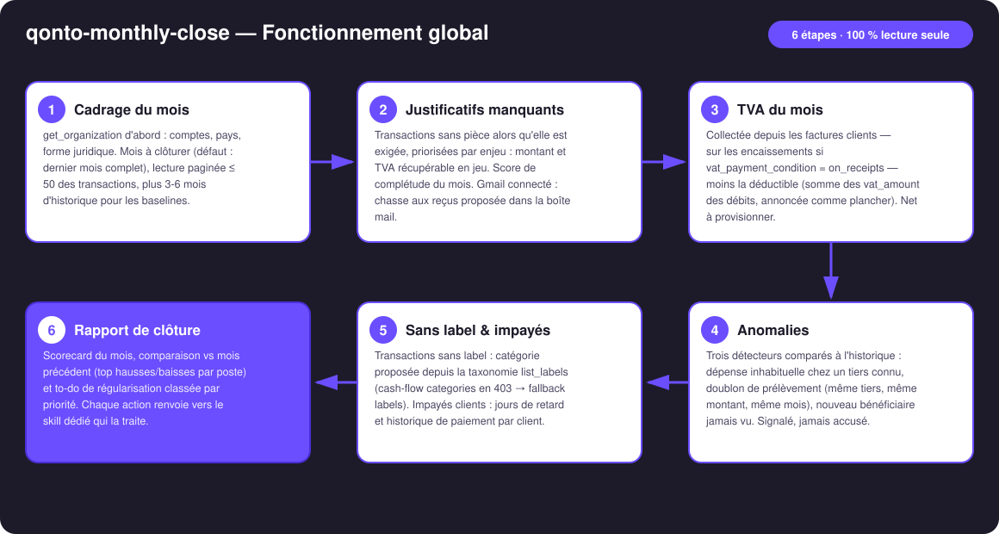
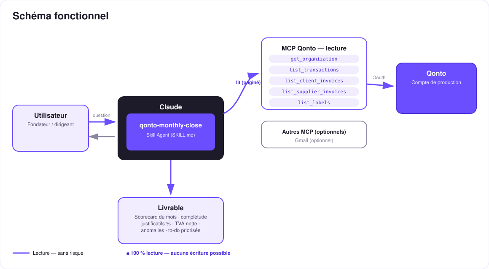

Clôture Zen — le CFO de fin de mois en 3 minutes. Un prompt, la revue complète du mois, la to-do priorisée.
Chaque fin de mois, le dirigeant de TPE passe 2 à 4 heures à compiler relevés, justificatifs, TVA et impayés pour son comptable. Un seul prompt — « clôture mon mois » — déclenche la revue complète :
Les pièces manquantes classées par enjeu — montant et TVA récupérable en jeu — avec le score de complétude du mois.
Collectée (sur les encaissements si on_receipts détecté) − déductible (plancher annoncé) = net à provisionner.
Dépense inhabituelle, doublon de prélèvement, nouveau bénéficiaire — signalées avec preuves, jamais accusées.
Sans-label, impayés, comparaison vs mois précédent → rapport de clôture + to-do classée P1/P2/P3.
| Prérequis | Détail | Obligatoire |
|---|---|---|
| Compte Qonto production | Le skill s'adapte à toute organisation — get_organization d'abord, zéro donnée en dur | ✅ |
| Pays | Justificatifs, anomalies, impayés, comparaisons : tous les pays Qonto. Module TVA : logique France ; autres pays (DE, ES, IT…) → estimation générique, annoncée comme telle | ℹ️ détecté |
| MCP Qonto connecté | Connecteur officiel (claude.ai / Claude Desktop), login OAuth | ✅ |
| Historique ≥ 3 mois | Les détecteurs d'anomalies et la comparaison ont besoin d'une base ; en dessous, dégradation honnête | ⭕ |
| MCP Gmail | Optionnel, détecté dynamiquement : chasse aux reçus manquants dans la boîte mail ; sinon le skill le dit et continue | ⭕ |

vat_payment_condition: "on_receipts" détecté sur les factures → la collectée suit les paiements reçus, pas les factures émisesvat_amount, avec le nombre de débits non renseignés annoncé — et le coût des justificatifs manquants chiffré (pas de facture = TVA non déductible)list_cash_flow_categories renvoie 403 sur le connecteur claude.ai → fallback list_labels, géré silencieusementemitted_at (1-2 j d'écart avec settled_at) — pas de fausse « transaction manquante » en fin de mois
Lecture seule intégrale : ce skill n'appelle aucun outil d'écriture — rien n'est créé, modifié, envoyé ni déplacé. Le rapport propose ; l'utilisateur dispose, dans l'app Qonto ou via les skills dédiés. On peut le lancer sur n'importe quel compte, n'importe quand, sans le moindre effet de bord.
| Détecteur | Signature | Preuves fournies |
|---|---|---|
| Dépense inhabituelle | Tiers connu dont le total du mois s'écarte fortement de sa baseline (> 2× la médiane), ou débit isolé hors gabarit du compte | Montant vs médiane historique du tiers, période de référence |
| Doublon de prélèvement | Même tiers, même montant (±1 %), deux fois ou plus dans le mois, en prélèvement — la signature classique de la double facturation | Les deux dates, les deux montants, l'identité du tiers |
| Nouveau bénéficiaire | Tiers jamais vu sur les mois précédents recevant un montant sortant significatif | Première apparition datée, montant, absence dans l'historique |
qonto-monthly-close est le chef d'orchestre mensuel : il détecte et priorise, en lecture seule. Chaque chantier a ensuite son spécialiste :
| Il détecte… | Le spécialiste qui agit |
|---|---|
| Justificatifs manquants | qonto-receipt-hunter — chasse + upload |
| Impayés clients | qonto-invoice-chaser — relances rédigées |
| TVA à provisionner | qonto-tax-pilot — échéancier + provision sous SCA |
| Sortie | Format | Quand |
|---|---|---|
| Réponse dans la conversation | Tableaux markdown : scorecard, justificatifs, TVA, anomalies, comparaison, impayés, to-do | Toujours — c'est la base |
| Dashboard de clôture | Fichier/artifact HTML : scorecard du mois, jauge de complétude, tuile TVA, cartes anomalies, checklist to-do | Si l'hôte affiche les fichiers (artifacts claude.ai, Claude Desktop, Claude Code) ; repli automatique sur les tableaux sinon |
La démo ≤ 3 min jointe à la PR suit le storyboard : la corvée de fin de mois → un seul prompt → la revue en direct → le rapport complet qui tombe en une passe (« 96 transactions passées en revue, 3 justificatifs manquants, 1 doublon détecté, TVA du mois : 717 € — voilà ta to-do de 10 minutes ») → le dashboard. Tournée en live sur un compte de production réel.
| Idée | Effort | Note |
|---|---|---|
| Rapport « prêt pour l'expert-comptable » (export PDF structuré) | Faible | Le contenu existe déjà, il manque la mise en forme cabinet |
| Mémoire de clôture : scorecards comparés mois après mois | Moyen | La complétude qui monte = la boîte qui se tient |
| Détecteur d'abonnements zombies (prélèvement récurrent jamais labellisé, jamais justifié) | Faible | Réutilise les baselines des anomalies |
| Multi-MCP : reçus depuis Google Drive en plus de Gmail | Faible | Détection dynamique, même modèle que Gmail |